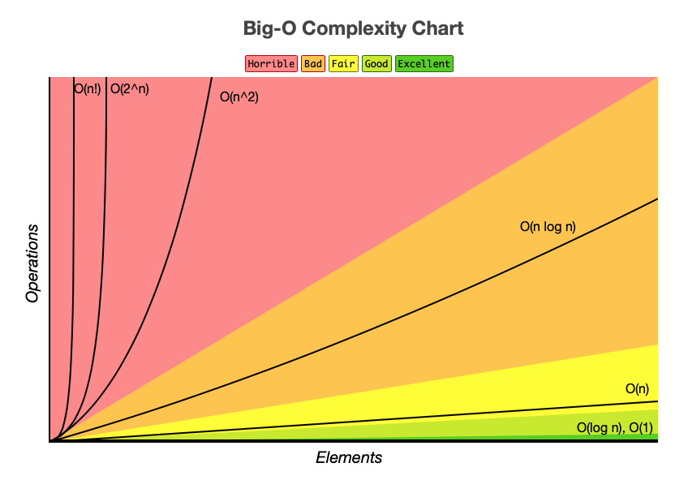
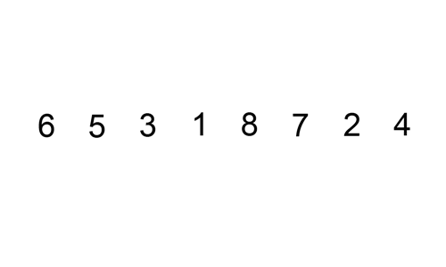

Last Updated: 2021-10-08
An algorithm is basically a step by step process. It's just like your parents teaching you how to first crawl then walk then run. In this tutorial, we are going to summarise what is being taught in class for algorithms and data structures.
Computational Complexity involves both the usage of time complexity as well as space complexity.
Time complexity is the concept of how the algorithm performs on the amount of data as represented by n. In most cases for time complexity, we consider the worst case and less of the best and the average case. We would obviously want to limit the amount of time we spend on running a program. This can hold up resources of our computer. Obviously, for those of you who intend to pursue a degree from ISTD and ESD, you would have to take note of this also.

The Figure above shows how time complexity is measured. What you have to know or takeaway is your mathematical knowledge of how to draw graphs. For example, the linear graph y = x and the other graphs like y = log(n) and so on and so forth. n represents the number of elements in general. So obviously, when you deal with only one element, your time complexity is O(1) this is the best case scenario. We will always try to aim for this. Based on the graph above, we can see that as the number of elements increase to a very large number (we may be talking more than millions in the present day), O(n!) performs the worst as compared to O(1) which performs the best.
If you have yet to understand any of the above, know that the less number of steps that you have to take the better. More often than not, the number of steps is represented by T(n).
Space complexity, we consider less of it unless our computer is very limited in space (eg. If you are running a lot of things at the same time on a 4GB ram). Is the amount of space taken to run the program. More space taken, the worse it can be.
Data structures are specialised format for storing, retrieving and performing operations on them. They are not the same as datatypes! Datatypes are things like integer. Is integer somewhere you store your data? Obviously no! It's a representation of a number as to how things are stored in the computer's memory.
Python is one of the things that you can "hide" because these inbuilt functions are highly abstracted and most of the time we are implementing them without knowing what the inbuilt functions do.
Syntax of inbuilt | Description | Time Complexity |
.append() | Adds an element to the end of a python list | O(n) You do this for each element for that number of elements. Hence, it's O(n) |
For i in range(n): | A loop. Something that repeats itself for that number of times or can go on forever. | O(n) You do this for that number of times. Hence, in general it can be O(n). |
For i in range(n): For i in range(k): | A nested for loop. You repeat what's inside the inner loop first then what's inside the outer loop. | O(n^2) You do this for what's inside for n times then what's outside for n times. Hence the number of steps is quadratic. |
a.sort() | A is a list and the sorting functions in python sort in increasing order unless you set the reverse to be true. | O(nlogn). You can read the implementation of them. Perhaps, it would be better to understand things like the merge sort to understand. |
.get() | Retrieving things from a hash table or list | O(1) It only takes one step to retrive an item. Do this for n times, you get a total time complexity of O(1 * n) = O(n) |
The list above only shows a few examples to get you started. Hope you get the idea!
There is a non-exhaustive list below for data structures that we can see. As explained above, data structures can be manipulated and they are very special. You need not make every call to store in the database when you can do it on the program itself.
Data Structures | What It Does |
Stacks and Queues | Stack- data structure that stores as a stack of data. Queues- First in and first out. You add element A first, then add element B. In the same order, you remove A first and then B. |
LinkedList | A data structure that represents a sequence of nodes. Single linked list has one node pointing to another while doubly linked lists have each node pointing both ways. |
Arrays and String | Basically, you store elements. String is a data structure that you can store anything as long as it is in a form of example "ab". The elements in an array are normally separated by a ",' |
Trees and Graphs | A tree is a data structure that consists of nodes. A tree is a type of graph but not all graphs are trees. The tree is acyclic while the graph is cyclic |
The above is for you to appreciate so that you know what you are coding.
By the end of this section, you should know the following sorting algorithms.
Here's a gif to get you started on what it is.

From the above, we can see that for each element, we need to do a comparison one by one! And for each element you compare with other elements and you insert them correctly! This is why the insertion sort is here! You go through the list each time you take the element out, and you compare and then insert.
Below is the code that shows the insertion sort.
insertion_sort.py
def insertion_sort(arr):
# go backwards and compare the elements
for element_idx in range(1,len(arr)):
el = arr[element_idx]
el_behind_idx = element_idx - 1
while el_behind_idx >= 0 and el < arr[el_behind_idx]:
#swap
arr[el_behind_idx + 1] = arr[el_behind_idx]
el_behind_idx -= 1
arr[el_behind_idx + 1] = el
return arr
arr = [12, 11, 13, 5, 6]
print(insertion_sort(arr))The code above, describes what is happening in each element of the list.